Avvio rapido
Ciao,
Se hai già pratica di programmi gestionali e vuoi inizare subito ad utilizzare eVento, nella Procedura di avvio rapido trovi le istruzioni per una configurazione di base.
Se invece vuoi prendere confidenza con le varie funzionalità prima di cominciare, ti consigliamo di non eseguire subito queste procedure, ma di esplorare le varie funzioni seguendo il percorso suggerito da questo manuale, partendo dalla sezione Per iniziare.
Buon lavoro!
Procedura di avvio rapido:
- Cancella i dati dimostrativi.
Appena attivato, il programma contiene dei dati dimostrativi. Cancellali per partire da una situazione pulita.
Parti dalle prenotazioni. Seleziona tutto (clicca sulla prima, tieni il maiuscolo e clicca sull'ultima), quindi elimina tutto. Fai lo stesso per le Rappresentazioni e per gli Eventi. - Imposta il contatore delle prenotazioni. Il contatore delle prenotazioni deve ripartire da 1 (o dal numero che vuoi tu). Vai nel menu Altro... -> Configurazione -> Configurazione Prenotazioni, imposta il prossimo numero di prenotazione a 1 e registra.
- Imposta la stagione. Vai nella tabella Stagioni (Menu Altro... -> Stagioni) e verifica che esista la stagione corrente. Se non esiste creala. Controlla che ci sia la spunta sulla la stagione giusta. Se non è corretta, seleziona quella giusta e premi il pulsante Corrente in fondo alla lista.
- Inserisci le Sale. Vai alla tabella Sale (Altro... -> Sale) e inserisci la/e sala/e della tua struttura con la relativa capienza.
- Configura l'e-mail: vai in Configurazione -> Configurazione invio e-maile inserisci l'indirizzo del mittente (è l'indirizzo a cui risponderà chi riceve le e-mail dal sistema) e l'eventuale indirizzo dove inviare un backup di tutte le e-mail. Al termine ricordati di registrare.
- Crea gli eventi della stagione
- Crea le rappresentazioni della stagione
Hai eseguito tutte le preparazioni indispensabili e puoi iniziare a lavorare! Puoi esplorare le altre funzionalità man mano che servono.
Per iniziare
Questa sezione spiega i concetti generali per navigare nel programma e accedere ai vari elementi.
La barra dei menu
La barra dei menu nella parte superiore della finestra consente di accedere a tutte le funzioni del programma.
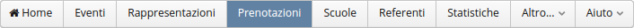I moduli principali (Eventi, Rappresentazioni, Prenotazioni) si invocano cliccando direttamente sul rispettivo menu, mentre tutte le altre funzioni sono contenute nel menu Altro...
Usare le liste
Quando si accede a un modulo del programma, per esempio le prenotazioni, viene presentata una lista.
Sulla lista si possono eseguire diverse operazioni:
- Cliccando sul titolo della colonna è possibile cambiare l'ordinamento.
- La larghezza delle colonne si può modificare trascinando il bordo della colonna.
- Posizionando il mouse sull'angolo superiore destro della lista, appare un'icona a forma di ingranaggio che consente di scegliere le colonne da visualizzare.
- Per selezionare una riga: si clicca sulla riga; cliccando nuovamente la riga viene deselezionata.
- Per selezionare più di una riga: si clicca sulle righe desiderate tenendo premuto il tasto ctrl.
- Per selezionare un intervallo di righe (da... a...): si seleziona la riga iniziale, poi si tiene premuto il tasto shift (maiuscolo) e si seleziona la riga finale.
- Dopo che hai effettuato una selezione di righe, puoi decidere di visualizzare solo quelle o di rimuoverle dalla lista. Questa funzione ti consente di raffinare manualmente i risultati delle ricerche. Per farlo devi usare i comandi che si trovano all'inteno del pulsante Seleziona... situato nella parte inferiore della lista.
- La parte inferiore della lista contiene i pulsanti standard per creare nuovi record, modificarli, eliminarli, eseguire le ricerche e selezionarli. Alcune liste contengono anche un pulsante Altro per accedere a funzioni specifiche di quella lista.
- Per utilizzare alcune funzioni (es. Modifica, Elimina...) bisogna prima selezionare la/e righe sulle quali applicare il comando. In alternativa puoi anche cliccare col tasto destro sulla riga desiderata, e apparirà il menu contestuale con i comandi disponibili.
- Per modificare un record si può anche cliccare 2 volte sulla riga.
La lista delle Prenotazioni
Vedere e modificare i dati nella scheda
La scheda presenta le informazioni dettagliate di un record e consente di modificarle. Per aprire la scheda, seleziona la riga e premi il pulsante Modifica, oppure fai doppio clic sulla riga nella lista.
Una scheda può contenere diverse sotto-pagine (tabs) che si possono selezionare cliccando sulle linguette presenti nella parte superiore (ove presenti).
La parte inferiore della scheda contiene i bottoni Annulla e Registra per confermare o abbandonare le modifiche, ed eventualmente altri bottoni specifici.
Informazioni obbligatorie
A volte alcune informazioni sono obbligatorie, e se non sono presenti la scheda non può essere registrata. In questo caso verrà visualizzato un segnale rosso vicino all'informazione obbligatoria. Muovendo il mouse sopra all'area interessata apparirà una spiegazione del problema.
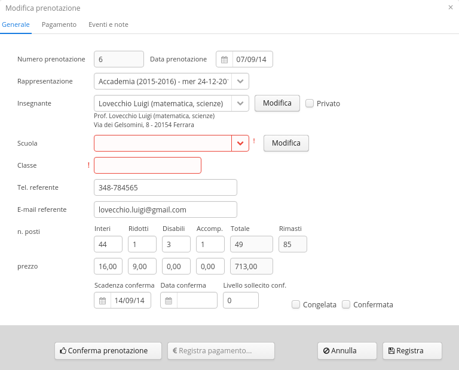La scheda di una Prenotazione
Le ricerche
Per filtrare i record presenti in una lista premi il pulsante Ricerca.
Si apre una scheda dove puoi inserire una o più condizioni di ricerca.
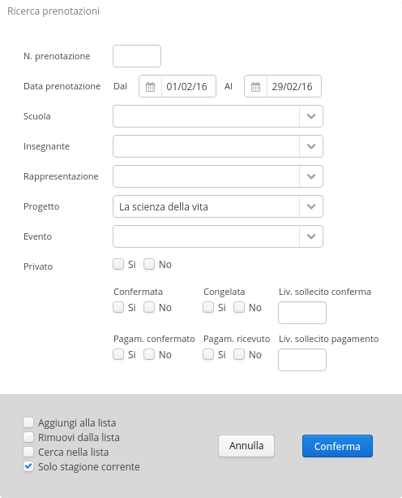Premendo Conferma vengono caricati nella lista i record trovati.
Nella parte inferiore della finestra di ricerca sono contenute le seguenti opzioni:
- Aggiungi alla lista: aggiunge i record trovati a quelli già contenuti nella lista.
- Rimuovi dalla lista: rimuove i record trovati dalla lista visualizzata.
- Cerca nella lista: cerca solo tra i record già presenti nella lista.
- Solo stagione corrente: cerca solo all'interno della stagione corrente. Questa opzione, se presente, è abilitata di default. Se vuoi cercare anche nelle stagioni precedenti devi togliere questa spunta.
Utilizzando queste opzioni è possibile effettuare ricerche combinate, affinando progressivamente il risultato con più passaggi di ricerca successivi.
Per mostrare nuovamente tutti i record nella lista, fai una ricerca e premere Conferma senza inserire condizioni, oppure seleziona mostra tutti dal menu Seleziona della lista.
Esportare i dati
Alcuni moduli (Rappresentazioni, Prenotazioni, Scuole, Referenti...) consentono di esportare i dati su file esterno per effettuare ulteriori elaborazioni.
Per esportare i dati procedi in questo modo:
- Carica nella lista le righe da esportare, tramite una ricerca o una selezione manuale;
- Seleziona il comando Esporta (in genere si trova nel pulsante Altro della lista);
- Dopo la conferma viene scaricato un file in formato Excel nella cartella dei download.
Lavorare in finestre diverse
A volte è utile aprire più di una finestra per accedere contemporaneamente a diverse parti del programma senza dover abbandonare quella in cui si sta lavorando. Per fare questo, apri una nuova finestra (o un nuovo pannello) del browser e collegati all'indirizzo del programma.
In questo modo puoi tenere aperte tutte le finestre che desideri ed effettuare in ognuna una diverso percorso di navigazione.
Eventi
In genere gli eventi sono definiti all'inizio della stagione, e contengono i dati generali relativi allo spettacolo o all'attività programmata. Un evento non definisce né luogo né data, perché può essere replicato più volte in una stagione, nello stesso luogo o in luoghi diversi (vedi Rappresentazioni).
Creare un nuovo Evento
Per creare un nuovo evento, vai sul modulo Eventi e premi il pulsante Nuovo. Viene presentata la scheda dove puoi inserire i dati del'evento.
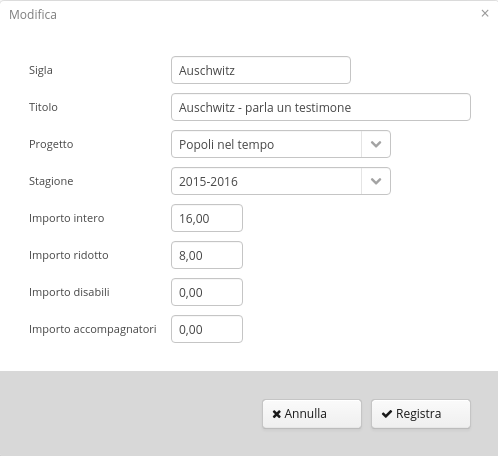La scheda di un Evento
La Sigla è una descrizione breve a uso interno che ti permetterà di riconoscerlo e selezionarlo facilmente nelle altre parti del programma. Il Titolo è il titolo completo dello spettacolo o dell'attività,
Il Progetto è un campo che puoi usare per raggruppare gli eventi in diverse categorie. Ha un uso interno a soli fini statistici, ed è facoltativo. Se vuoi usarlo, devi prima definire i tuoi progetti nella apposita tabella Progetti (menu Altro -> Progetti).
Ogni progetto è relativo a una Stagione, che in genere per le scuole va da ottobre a maggio/giugno. Le Stagioni si trovano nella tabella Stagioni (menu Altro -> Stagioni). All'inizio di ogni stagione, prima di iniziare ad inserire gli eventi, va creata una nuova riga in questa tabella.
Gli importi sono i prezzi di default per ogni categoria di partecipante. Sono previste quattro categorie: Interi, Ridotti, Disabili, Accompagnatori. Potete utilizzare solo quelle che vi servono. I prezzi che definisci qui sono quelli di default per questo tipo di evento, ma potrai ancora modificarli per le singole rappresentazioni o anche per le singole prenotazioni.
Eliminare un Evento
Per eliminare un Evento, selezionalo nella lista e premi il pulsante Elimina.
Puoi eliminare un Evento solo se non hai definito alcuna Rappresentazione che si riferisce all'Evento. In caso contrario devi prima eliminare le rappresentazioni.
Rappresentazioni
Le Rappresentazioni sono le varie repliche di uno stesso evento definite a calendario. In ogni rappresentazione si definiscono la data, l'ora e il luogo dell'evento.
Creare una Rappresentazione
Le rappresentazioni possono essere aggiunte in qualsiasi momento premendo il pulsante Nuovo.
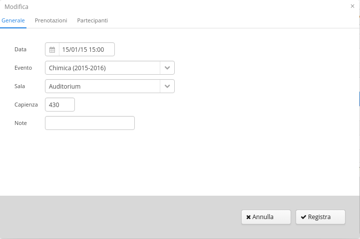La scheda di una Rappresentazione
Il campo Data comprende data e ora.
Nel campo Evento devi selezionare l'evento che viene rappresentato.
La Sala indica il luogo dove viene rappresentato l'evento. È possibile rappresentare l'evento in luoghi diversi, e ogni luogo può avere una diversa capienza. In base alla sala selezionata, viene inserita automaticamente la capienza (che puoi sempre modificare per la singola rappresentazione). Questa indicazione serve per controllare l'eventuale overbooking in fase di ricevimento delle prenotazioni.
Per definire nuove sale e le relative capienze, vai alla tabella Sale (Menu Altro -> Sale)
Eliminare una Rappresentazione
Per eliminare una Rappresentazione, selezionala nella lista e premi il pulsante Elimina.
Puoi eliminare una Rappresentazione solo se non hai già inserito prenotazioni. In caso contrario devi prima eliminare le prenotazioni o spostarle ad altra data (vedi "Spostare le prenotazioni").
Vedere le prenotazioni ricevute
All'interno della scheda di una Rappresentazione puoi vedere l'elenco delle prenotazioni ricevute. Per questo devi premere la linguetta Prenotazioni situata nella parte alta della scheda. Si accede alla pagina che visualizza la lista delle prenotazioni, ed è anche possibile vedere i dettagli della prenotazione facendo doppio clic sulla prenotazione stessa.
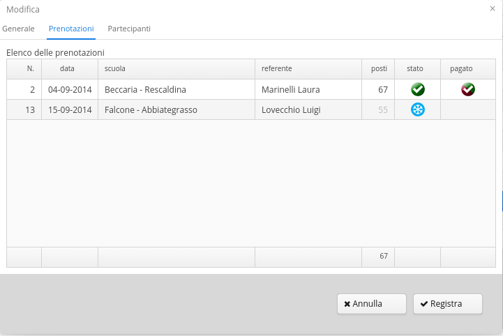La pagina delle Prenotazioni
Registro degli insegnanti partecipanti
Al termine della rappresentazione è possibile inserire l'elenco degli insegnanti o accompagnatori che hanno effettivamente partecipato alla rappresentazione.
Questa funzione può servire:
- a fini statistici per monitorare chi partecipa e a quali eventi;
- per fornire all'insegnante/accompagnatore eventuali attestati di partecipazione.
Per accedere al registro dei partecipanti, premi la linguetta Partecipanti situata nella parte alta della scheda.
Per inserire un nuovo nominativo, selezionalo tramite il campo Partecipante e premi il pulsante Aggiungi.
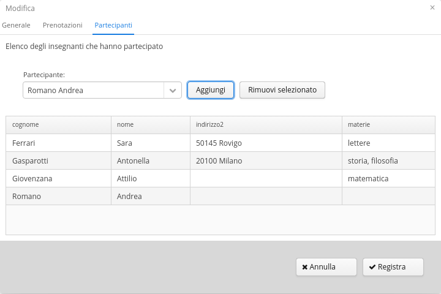Il registro dei partecipanti
L'elenco dei partecipanti può essere esportato su file tramite il pulsante Altro nella lista Rappresentazioni.
Prenotazioni
In questo modulo si effettua tutta la gestione del flusso delle prenotazioni, dall'inserimento, alla conferma, fino alla gestione del pagamento.
La lista delle Prenotazioni
Relazioni tra scuola, referente e prenotazione
La mobilità degli insegnanti è frequente. Per questo motivo gli insegnanti non sono legati alla scuola ma possono prenotare (in momenti diversi) a nome e per conto di diverse scuole. Un insegnante (o referente) è associato a una scuola solo nell'ambito di una singola Prenotazione.
Ogni prenotazione è sempre legata a un Referente.
Ogni prenotazione è legata a una Scuola, a meno che non sia una prenotazione di privato, nel qual caso la scuola non è specificata.
Inserire una nuova Prenotazione
Per inserire le prenotazioni bisogna aver definito gli Eventi e il calendario delle Rappresentazioni da prenotare.
Per inserire una nuova Prenotazione, vai al modulo Prenotazioni e premi il pulsante Nuovo. Viene presentata la scheda da compilare.
La scheda di una Prenotazione
Creare Referenti e Scuole dalla prenotazione
Quando si inserisce una nuova prenotazione, se il referente o la scuola non sono presenti in anagrafica, puoi aggiungerli direttamente.
Inserisci il cognome del referente nel selettore. Se non compare nella lista, non è presente in anagrafica. In tal caso premi il tasto Invio. Si apre una nuova scheda anagrafica con il cognome già compilato. Compila il resto dei dati e registra. Il nuovo referente viene registrato in anagrafica e inserito nella prenotazione.
Allo stesso modo, inserendo una prenotazione può essere necessario modificare alcuni dati del referente (telefono, e-mail o altro). In questo caso dopo aver selezionato il referente premi il pulsante Modifica a fianco del selettore. Viene presentata la scheda del referente che puoi modificare.
Nello stesso modo puoi aggiungere e modificare anche la Scuola.
Prenotazioni di privati
La spunta Privato vicino al nome del referente indica che la prenotazione è effettuata da un privato anziché da una scuola. Se il referente è un privato, la spunta viene automaticamente accesa. Ma anche se è un insegnante che vuole per questa volta partecipare a titolo personale (da solo o con conoscenti, ma non con la classe) è possibile marcare la prenotazione come Privato.
Quando la prenotazione è di un privato, non è più necessario indicare la scuola ed è possibile omettere l'invio delle email di conferma e/o sollecito.
Prenotazioni con prezzi personalizzati
Puoi modificare prezzi per ogni singola prenotazione. Per esempio, in caso di abbonamenti, promozioni, o gruppi numerosi, puoi praticare prezzi personalizzati.
Per farlo, basta modificare i prezzi all'interno della scheda prenotazione. I nuovi prezzi saranno applicati solo alla prenotazione modificata.
Date di scadenza
Quando si inserisce una nuova prenotazione, vengono automaticamente calcolate le date di scadenza conferma e scadenza pagamento. Queste date sono usate dal sistema per evidenziare le posizioni in ritardo e determinano l'invio automatico delle e-mail di sollecito.
- La scadenza conferma è posta a 7 giorni dopo la data della prenotazione.
- La scadenza pagamento è posta a 30 giorni prima della rappresentazione.
Il numero di giorni è configurabile in Configurazione -> Prenotazioni. È sempre possibile inserire le date di scadenza manualmente.
Verifica della disponibilità e overbooking
Durante l'inserimento della prenotazione, il numero di posti disponibili viene visualizzato nella casella Rimasti. Questo numero tiene conto dei posti impegnati da questa prenotazione, dalle altre prenotazioni, e della capacità della sala.
Se questo numero diventa negativo significa che si sta effettuando overbooking.
Il programma non pone alcun vincolo in caso di overbooking, ma si limita a segnalare la situazione. La politica di overbooking è decisa da voi.
Informazioni di pagamento
La scheda prenotazione ha una pagina dedicata alle le informazioni relative al pagamento. Per vederla clicca sulla linguetta "Pagamento" nella parte superiore della scheda.
La maggior parte delle informazioni che trovi su questa pagina sono movimentate automaticamente dalla procedura di registrazione pagamento, quindi in genere non è necessario inserirle manualmente. Le sole informazioni da inserire manualmente sono Modo pagamento (se noto in anticipo) e Tipo ricevuta (come richiesto dalla scuola).
Invio e-mail di riepilogo prenotazione
Subito dopo aver inserito una nuova prenotazione, viene automaticamente inviata al referente una e-mail di riepilogo e istruzioni per i passaggi successivi. Viene usato l'indirizzo email inserito nella prenotazione, che inizialmente è quello del referente ma può essere cambiato.
È possibile inviare la stessa e-mail anche alla scuola (vedi Altro...-> Configurazione -> Configurazione invio e-mail).
Il contenuto di questa e-mail si può personalizzare tramite la funzione Altro... -> Lettere Base.
Numerazione delle Prenotazioni
Il numero della prenotazione viene attribuito automaticamente e viene usato come riferimento in tutte le comunicazioni.
Il numero delle nuove prenotazioni viene attribuito in base a un contatore mantenuto nelle preferenze dell'applicazione. Il contatore comincia a contare da 1 e viene incrementato ad ogni nuova prenotazione.
In caso di necessità puoi accedere al contatore e modificarlo per far partire la numerazione dal numero desiderato (menu Altro -> Configurazione -> Configurazione Prenotazioni). In tal caso fai molta attenzione a non generare doppioni nella stessa stagione!
Se devi partire da un numero esistente, modifica il contatore nelle preferenze.
Non è necessario far ripartire la numerazione ad ogni nuova stagione, si può proseguire la serie della stagione precedente. Ma se preferisci resettare la numerazione a inizio stagione, basta reimpostare il contatore.
Flusso della Prenotazione
La prenotazione viene ricevuta telefonicamente, via e-mail o per altro canale e viene inserita nel sistema. Da questo momento inizia il flusso dela prenotazione che attraversa le seguenti fasi:
- Invio del riepilogo: subito dopo l'inserimento della prenotazione, viene inviata una e-mail al referente che riepiloga gli estremi della prenotazione (evento, data, ora, n. partecipanti, importo...) e invita il referente a verificarli e a confermarli. Per facilitare la risposta, questa mail potrebbe includere anche un modulo da rendere compilato o un link a un form da compilare online. Da questo momento il referente ha a disposizione un certo numero di giorni per verificare e inviare conferma della prenotazione.
- Conferma della prenotazione: si riceve dal referente una comunicazione (e-mail, modulo
compilato o altro) che conferma o rettifica i dati precedentemente inviati nell'e-mail di riepilogo. A
questo punto, nel programma si eseguono le eventuali rettifiche e si conferma la
prenotazione. In questo momento al referente viene inviata una e-mail di conferma che
ricorda di effettuare il pagamento entro una certa data (un dato numero di giorni prima dell'evento) e
di trasmettere la documentazione del pagamento.
A questo punto il referente, entro la data specificata, deve inviare un documento che attesta l'avvenuto pagamento (contabile della banca o della posta, autorizzazione alla fatturazione elettronica o altro). - Conferma del pagamento: si riceve dal referente il documento che attesta l'avvenuto pagamento. Si verifica la correttezza dei dati e a questo punto nel sistema si esegue la conferma di pagamento. La conferma di pagamento non rappresenta ancora una prova dell'effettivo incasso.
- Registrazione del pagamento: trascorsi i tempi tecnici l'ente (banca/posta...) trasmette una notifica di incasso. L'incasso è effettivamente avvenuto e si registra il pagamento.
Se non interessa differenziare le fasi di conferma e di registrazione del pagamento (3 e 4), queste possono essere unificate in una sola operazione (vedi Registrazione del pagamento).
Il diagramma seguente illustra graficamente i vari passaggi:
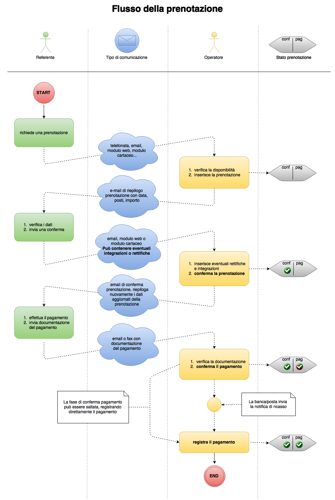Diagramma di flusso della Prenotazione
Confermare una prenotazione
Quando il referente invia la comunicazione di conferma, la prenotazione va confermata sul sistema.
Per confermare una prenotazione, procedi in questo modo:
- Apri la scheda della prenotazione;
- Verifica i dati e inserisci le eventuali rettifiche comunicate dal referente;
- Premi il pulsante Conferma Prenotazione che si trova nella parte inferiore della scheda: si apre il dialogo di conferma prenotazione;
- Modifica la data di conferma (se diversa da quella odierna);
- Premi il pulsante Conferma per confermare la prenotazione.
Dialogo di conferma prenotazione
Subito dopo la conferma, viene inviata una e-mail di riepilogo al referente e/o alla scuola. Nel dialogo puoi vedere a chi sta per essere inviata l'e-mail, ed eventualmente puoi modificare i destinatari e gli indirizzi e-mail.
Puoi modificare i destinatari di default delle email andando sul menu Altro... -> Configurazione -> Configuazione invio email
Quando una prenotazione viene confermata, tutte le modifiche vengono registrate automaticamente.
Registrare il pagamento
Quando si riceve la documentazione dal referente o l'effettivo pagamento, l'operazione va registrata sul sistema.
Nota: una prenotazione deve essere confermata prima di poter registrare il pagamento.
Per registrare il pagamento, apri la scheda della prenotazione e premi il pulsante Registra Pagamento. Si apre di dialogo di registrazione pagamento.
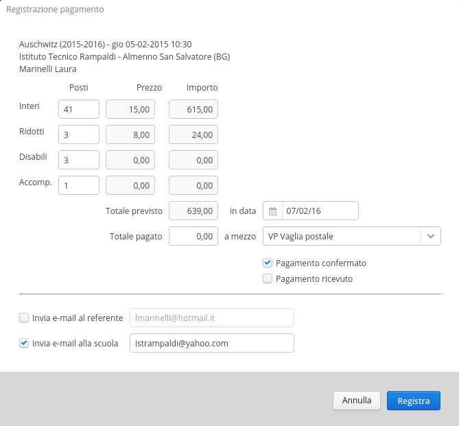Dialogo di registrazione del pagamento
Il dialogo riepiloga il numero di spettatori e l'importo da pagare.
Nel dialogo puoi inserire le seguenti informazioni:
- Numero di posti: di default è quello previsto dalla prenotazione; se il numero è variato è possibile effettuare direttamente qui la correzione e l'importo viene ricalcolato al volo.
- Totale pagato, è l'importo pagato, che potrebbe anche differire dal previsto per vari motivi (errori, arrotondamenti, ecc...). Questa informazione va obbligatoriamente inserita, anche se uguale al previsto.
- Data pagamento: la data del pagamento, di default è quella odierna ma è possibile modificarla se il pagamento è stato effettuato in altra data.
- Mezzo di pagamento: selezionare dalla tendina il mezzo di pagamento utilizzato.
- Pagamento Confermato e Pagamento Ricevuto: selezionare se si tratta di conferma pagamento o registrazione pagamento. La registrazione pagamento comporta implicitamente la conferma del pagamento.
- Invio e-mail: viene mostrato in anteprima a chi verranno inviate le e-mail di conferma pagamento. È possibile modificare i destinatari manualmente.
Confermando il pagamento, tutte le informazioni vengono registrate nella prenotazione e la prenotazione viene registrata.
Sono previste due fasi di registrazione del pagamento:
- Pagamento confermato: il referente ha inviato un documento che attesta il pagamento (contabile bancaria o postale, autorizzazione alla fattura elettronica...)
- Pagamento ricevuto: è stata ricevuta la notifica dalla banca/posta che attesta l'effettivo ricevimento dell'importo da pagare.
Sta a voi decidere se utilizzare le due fasi separatamente o gestire solo la fase di registrazione del pagamento. Se decidete di gestire una fase unica, mettendo la spunta su Pagamento Ricevuto viene automaticamente acceso anche Pagamento Confermato.
Se si conferma e registra il pagamento in una sola fase, solo la e-mail relativa alla registrazione del pagamento viene inviata (e solo se previsto in configurazione invio e-mail).
Congelamento di una prenotazione
Il congelamento di una prenotazione permette di disattivare completamente il flusso della prenotazione tenendola in sospeso senza doverla cancellare.
Quando una prenotazione viene congelata:
- I posti prenotati vengono liberati e resi disponibili per altre prenotazioni;
- Non vengono più effettuati controlli sulle scadenze o inviati solleciti dal sistema.
- Viene inviata una e-mail per avvisare che i posti non sono più riservati.
È utile congelare una prenotazione quando, nonostante i solleciti, non si ha risposta dal referente ma non si vuole ancora cancellare definitivamente la prenotazione.
Congelare una prenotazione
- Cliccare col tasto destro la prenotazione da congelare;
- Scegliere il comando Congela prenotazione... dal menu contestuale;
- Verificare le email da inviare e premere Conferma.
La prenotazione viene congelata e viene inviata una e-mail di notifica al referente e/o alla scuola.
Non è possibile congelare una prenotazione dopo che è stata confermata.
Riattivare una prenotazione
Aprire la scheda della prenotazione, rimuovere la spunta Congelata e registrare.
Riattivando una prenotazione, i posti vengono nuovamente impegnati e il normale flusso viene ripristinato.
Attenzione! Quando si riattiva una prenotazione congelata, non è garantito che i posti siano ancora disponibili! Prima di riattivarla, controlla di avere posti disponibili a sufficienza!
Visualizzazione delle posizioni scadute
Esistono 3 tipi di posizioni scadute:
- Conferma prenotazione scaduta: sono trascorsi i termini per l'invio della conferma prenotazione (un simbolo rosso viene visualizzato nella colonna stato).
- Conferma pagamento scaduta: sono trascorsi i termini per l'invio della conferma del pagamento (un simbolo rosso viene visualizzato nella colonna pagato)
- Prenotazione congelata: La prenotazione è stata congelata ed è sospesa (un ghiacciolo azzurro viene visualizzato nella colonna stato)
Puoi avere immediatamente sotto controllo i vari tipi di situazioni scadute tramite le funzioni di ricerca posizioni scadute. Premi il pulsante Altro in fondo alla lista delle prenotazioni:
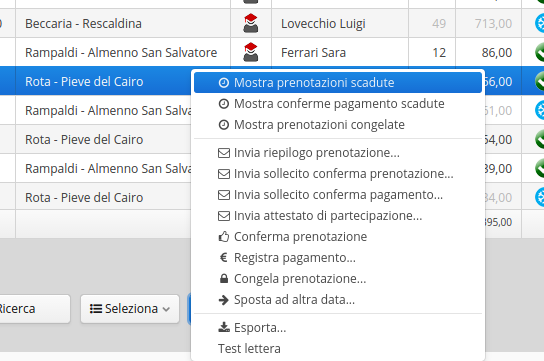La lista contiene i comandi Mostra prenotazioni scadute, Mostra conferme pagamento scadute, Mostra prenotazioni congelate. Questi comandi caricano a video le liste delle corrispondenti posizioni scadute che puoi esaminare.
Controllo automatico delle scadenze
Ogni giorno il sistema può controllare automaticamente le scadenze delle prenotazioni ed inviare delle e-mail di sollecito personalizzate al referente e/o alla scuola.
Questo controllo avviene una volta al giorno, a un'ora prestabilita, e viene eseguito dal server. Non è necessario collegarsi al programma perché il controllo venga eseguito.
Ogni giorno all'ora prestabilita il sistema esegue i seguenti controlli:
- Scadenze conferma - primo sollecito: identifica le prenotazioni con conferma scaduta, invia una email di sollecito e posticipa la scadenza di un certo numero di giorni.
- Scadenze conferma - secondo sollecito: identifica le prenotazioni con conferma scaduta e già precedentemente sollecitate, invia una seconda email di sollecito e le congela.
- Scadenze pagamento - sollecito: identifica le prenotazioni con pagamento scaduto e invia una email di sollecito.
Dopo avere inviato le email di sollecito, un apposito indicatore (campanella) viene visualizzato nella lista delle prenotazioni, ad indicare che il referente è stato sollecitato.
Il diagramma seguente illustra il flusso dei controlli nel tempo, con gli effetti sullo stato delle prenotazioni.
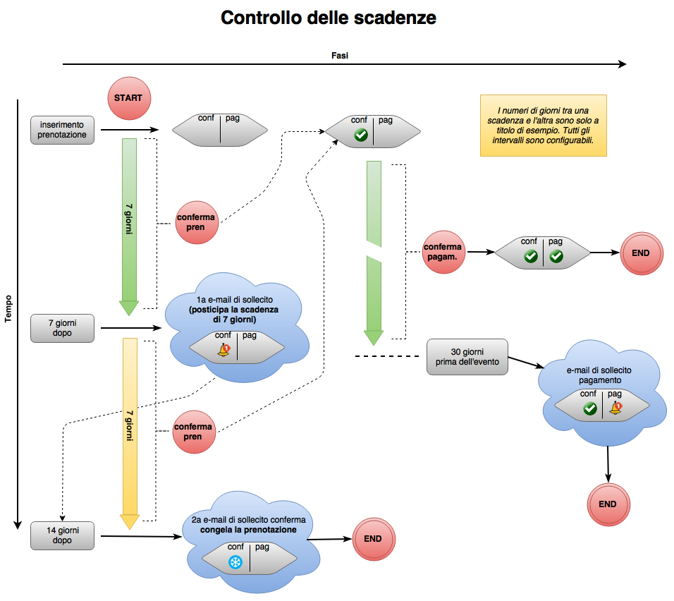Flusso di controllo delle posizioni scadute
Il sistema di controllo può essere attivato, disattivato e configurato tramite l'apposita pagina di configurazione che si trova nella sezione Configurazione -> Programmazione controlli automatici
Invio manuale dei solleciti
I solleciti si possono inviare anche manualmente.
Per inviare manualmente un sollecito:
- Selezionare la prenotazione nella lista
- Premere il pulsante Altro (o cliccare col tasto destro sulla prenotazione), e selezionare il tipo di sollecito da inviare.
Normalmente non è necessario inviare manualmente i solleciti perché vengono già inviati in automatico. Potrebbe rendersi necessaro se il sistema di invio automatico è rimasto disattivato per un certo tempo, o se ci sono stati altri problemi che hanno impedito l'invio automatico dei solleciti.
I solleciti si possono inviare manualmente solo se non sono già stati inviati. Se un sollecito di un certo tipo è già stato inviato e lo si vuole reinviare, lo si può fare dalla pagina Eventi della scheda Prenotazione.
Referenti
In questo modulo si gestisce l'archivio degli insegnanti o altre figure referenti per le prenotazioni.
Inserire i referenti
Per aggiungere un referente premi il pulsante Nuovo e compila la scheda.
È anche possibile aggiungere i referenti direttamente in fase di prenotazione, in ogni caso saranno aggiunti all'anagrafica dei referenti e appariranno nella lista.
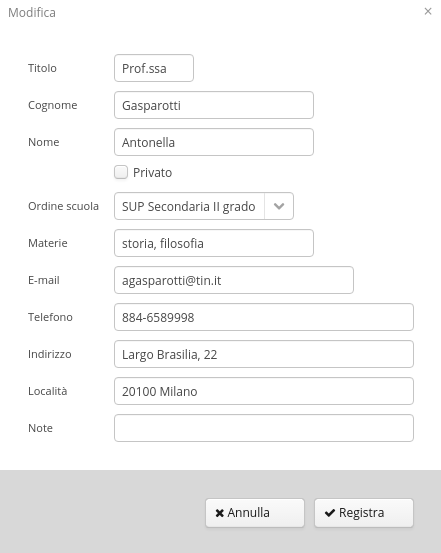La scheda di un Referente
Gestione di privati
È possibile identificare un referente come Privato tramite l'apposito indicatore nella scheda del referente. Questo consente di gestire anche anagrafiche di privati e non solo di insegnanti.
A livello di anagrafica del referente, non sono più presenti i campi Ordine scuola e Classe, e il sogetto ha una icona diversa nella lsta. Mentre se si seleziona un privato quando si inserisce una prenotazione, la prenotazione viene automaticamente marcata come Privato. Questo a sua volta disattiva alcune funzionalità della prenotazione, come spiegato nella sezione Prenotazioni di privati.
Importare nominativi da un file
Se hai già un file con i nominativi dei referenti puoi importare i dati nel programma. Per fare questo vai alla lista Referenti, premi il pulsante Altro e seleziona la funzione Importa. Si presenta una maschera con le istruzioni per la preparazione del file. Prepara il file come specificato e procedi all'importazione.
.Eliminare un Referente
Per eliminare un Referente, selezionalo nella lista e premi il pulsante Elimina.
Puoi eliminare un Referente solo se non ha prenotazioni. In caso contrario devi prima eliminare le prenotazioni o assegnarle ad un altro referente.
Scuole
Questo modulo mantiene l'archivio delle scuole che effettuano le prenotazioni e partecipano agli eventi.
Inserire le scuole
Per aggiungere una scuola premi il pulsante Nuovo e compila la scheda.
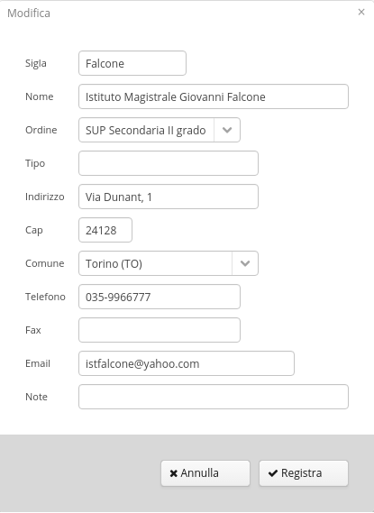La scheda di una Scuola
È anche possibile aggiungere le scuole direttamente in fase di prenotazione, in ogni caso saranno aggiunte all'anagrafica delle scuole e appariranno nella lista.
Importare le scuole da un file
Se hai già un file con le scuole puoi importare i dati nel programma. Per fare questo vai alla lista Scuole, premi il pulsante Altro e seleziona la funzione Importa. Si presenta una maschera con le istruzioni per la preparazione del file. Prepara il file come specificato e procedi all'importazione.
.Eliminare una Scuola
Per eliminare una Scuola, selezionala nella lista e premi il pulsante Elimina.
Puoi eliminare una Scuola solo se questa non ha prenotazioni. In caso contrario devi prima eliminare le prenotazioni o assegnarle ad altra scuola.
Le Stagioni
Il sistema mantiene sempre in linea i dati della stagione corrente e di tutte quelle passate. Ma per non appesantire le liste con dati inutili, filtra tutti i dati sulla Stagione corrente.
A questo scopo, gli Eventi sono associati a una Stagione, e di conseguenza lo sono anche tutte le Rappresentazioni e Prenotazioni collegate.
Il filtro sulla Stagione Corrente
Quando si effettua una ricerca di Eventi, Rappresentazioni o Prenotazioni, nel dialogo delle condizioni di ricerca c'è la spunta Solo stagione corrente, che è automaticamente selezionata. In questo modo, tutti i risultati sono filtrati sulla stagione corrente.
Se si vogliono effettuare ricerche anche sulle stagioni precedenti è necessario togliere questa spunta nel dialogo di ricerca.
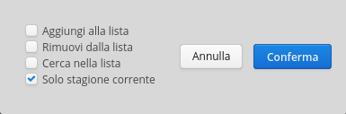La tabella Stagioni
Per utilizzare questo meccanismo è necessario inserire le stagioni nella tabella Stagioni, e identificare qual'è la stagione corrente. La tabella Stagioni è accessibile tramite il menu Altro... -> Stagioni.
Ogni anno, all'inizio della stagione, si inserisce una nuova riga in questa tabella e si definisce come Stagione Corrente. Per fare questo si seleziona la riga e si preme il pulsante Corrente al piede della lista.
La stagione ha un nome e le date di inizio e di fine. Le date hanno solo scopo indicativo, non funzionale.
È possibile in qualsiasi momento selezionare una diversa Stagione Corrente, e tutto il programma risulterà filtrato sulla Stagione selezionata.
Non è possibile eliminare una Stagione se ci sono degli eventi ad essa collegati.
Statistiche
bla bla
Lettere base
Le Lettere Base rappresentano i modelli usati per costruire le e-mail inviate dal programma (e-mail informative, e-mail di conferma o di sollecito...)
Puoi accedere al modulo Lettere Base tramite il menu Altro... - > Lettere Base.
Qui trovi tutti i modelli usati dal programma per le comunicazioni relative alle prenotazioni. Questi modelli sono contrassegnati come "Lettera Standard" e non possono essere cancellati, ma il contenuto può essere personalizzato. In questa stessa sezione puoi anche aggiungere nuovi modelli per inviare comunicazioni di altro tipo (es. comunicazioni promozionali).
Al momento dell'invio, i modelli vengono automaticamente completati con le informazioni specifiche recuperate dalla prenotazione.
Esistono i seguenti modelli di lettera standard:
- info_prenotazione: e-mail inviata all'inserimento di una nuova prenotazione.
- conferma_prenotazione: e-mail inviata quando si conferma di una prenotazione.
- memo_scadenza_prenotazione: e-mail inviata automaticamente se la conferma prenotazione non perviene entro il temine previsto (1° livello di sollecito).
- congelamento_opzione: e-mail inviata automaticamente se la conferma prenotazione non è ancora pervenuta dopo il 1° sollecito. (2° livello di sollecito).
- conferma_pagamento: inviata quando viene registrata la conferma del pagamento.
- memo_scadenza_pagamento: inviata automaticamente se la conferma del pagamento non perviene entro il termine previsto.
- attestato_partecipazione: documento inviato alla scuola per attestare l'avvenuto pagamento relativo a una prenotazione.
Comporre una lettera base
Il contenuto di una lettera base può essere completamente personalizzato con testo, oggetto, immagini ed eventuali allegati.
È possibile utilizzare una serie predefinita di testi variabili che al momento dell'invio verranno sostituiti con i dati specifici della prenotazione.
Le sostituzioni possono avvenire sia nell'oggetto che nel testo della lettera.
La sintassi per l'uso dei testi variabili è la seguente:
${nome_variabile}
Per esempio, scrivendo il seguente testo nella lettera base:
Spettabile Prof. ${cognomeInsegnante}, le confermiamo che il numero
della Sua
prenotazione è ${numeroPrenotazione}.
l'email inviata conterrà:
Spettabile Prof. Rossi, le confermiamo che il numero della Sua prenotazione è 146.
L'elenco completo delle variabili disponibili è contenuto in una speciale lettera base denominata demo_sostituzioni che trovate nella lista delle lettere base. Puoi colaudare questa lettera base su una qualsiasi prenotazione per vedere tutte le possibili sostituzioni.
Collaudare una lettera base
Puoi verificare il risultato di una qualsiasi lettera base simulando l'invio della lettera per una prenotazione.
Per farlo, vai nella lista prenotazioni e seleziona una prenotazione nella lista, quindi premi il pulsante Altro in fondo alla lista e seleziona Test lettera. Scegli la lettera da collaudare e inserisci un indirizzo e-mail. La lettera viene personalizzata in funzione della prenotazione che hai selezionato e viene inviata al'indirizzo che hai inserito. In questo modo puoi verificare il risultato effettivo delle modifiche.
Utilizzare il formato HTML
Puoi anche comporre il testo della lettera in linguaggio HTML. Questo consente di utilizzare i codici di formattazione HTML (titoli, grassetto, corsivo, liste numerate ecc...) per formattare il testo in modo più leggibile e gradevole.
Per utilizzare questa funzionalità è necessaria una conoscenza di base del linguaggio HTML.
Per comporre la lettera in formato HTML occorre:
- inserire gli opportuni marcatori HTML nel testo della lettera
- accendere la spunta "Testo HTML" nella scheda della lettera
In questo modo il testo verrà interpretato e visualizzato in formato HTML nella email ricevuta dal cliente.
Aggiungere allegati
È anche possibile aggiungere uno o più allegati alle lettere base.
Può essere allegato qualsiasi tipo di file (.pdf, .jpg ecc...)
I file da allegare vanno precaricati sul server per renderli disponibili.
Caricamento e gestione degli allegati
Per accedere alla funzione di gestione degli allegati, dalla lista lettere base premere il bottone Altro -> Gestione allegati. Questa funzione è accessibile anche dalla scheda delle lettere base.
La Gestione Allegati permette di aggiungere, rimuovere o rinominare gli allegati che sono disponibili per l'utilizzo in tutte le lettere base.
I file così caricati sono disponibili anche per l'utilizzo come immagini inserite all'interno di un testo HTML (vedi alla voce "Inserire delle immagini")
Aggiunta di un allegato a una lettera base
Per aggiungere un allegato, apri la scheda della lettera base, premi il bottone Aggiungi Allegato e seleziona dalla lista l'allegato precedentemente caricato.
Il nome dell'allegato verrà aggiunto alla lista dei nomi separati da virgola.
Per rimuovere un allegato dalla email, semplicemente cancellalo dall'elenco dei nomi nel campo Allegati.
Inserire immagini
Puoi inserire immagini anche all'interno del testo delle e-mail
Attenzione! Questa funzione è supportata solo nelle email in formato HTML
Per inserire una immagine nel testo, inserire il seguente tag html nel punto del testo dove si vuole che appaia l'immagine:
dove immagine.png è il nome del file immagine caricato in Gestione Allegati.
Puoi anche specificare le dimensioni dell'immagine:
Il file dell'immagine deve esistere sul server. Quindi, come per gli allegati, i file vanno precaricati per renderli disponibili.
Nota: questi file non vanno aggiunti all'elenco allegati della mail, ma solo referenziati nel tag html inserito nel testo!
Può essere allegato qualsiasi tipo di file interpretabile come immagine dai client di posta elettronica; si consiglia di usare i formati .png, .gif o .jpg
Notifiche via e-mail
Registri degli eventi
Registro eventi Prenotazioni
Questo registro contiene tutti gli eventi significativi che si sono verificati nelle Prenotazioni. Ogni volta che si effettua la conferma prenotazione, la registrazione di un pagamento, il congelamento della prenotazione ecc... dei nuovi eventi vengono registrati in questa tabella. Analizzando questi eventi si può ricostruire la storia della prenotazione.
Se l'evento ha comportato anche l'invio di una e-mail, il registro riporta anche il destinatario e l'esito.
Premendo il pulsante Reinvia, è possibile inviare nuovamente l'e-mail. Questo può essere utile se alcune e-mail non hanno potuto essere inviate per qualche problema transitorio: in questo modo si può facilmente reinviare la e-mail quando il funzionamento è stato ripristinato.
L'elenco degli eventi qui riportato è lo stesso che si vede dall'interno della scheda prenotazione, alla pagina Eventi e Note.
Le operazioni sulla prenotazione che comportano l'invio di e-mail (per esempio la conferma prenotazione) generano due eventi nel Registro eventi prenotazione: un evento per l'operazione e uno per la spedizione della e-mail.
La spedizione inoltre genera un ulteriore evento nel Registro spedizioni generale.
Registro spedizioni
Il Registro Spedizioni è un registro che riporta un elenco di tutte le spedizioni di e-mail (riuscite o fallite) effettuate dal programma.
Puoi accedere al Registro spedizioni tramite il menu Altro... -> Registro spedizioni.
Qui puoi controllare se tutte le email sono state spedite correttamente ed eventualmente ottenere i codici di errore per le mail che non hanno potuto essere spedite.
Altre tabelle
Configurazione
Questo modulo permette di configurare le varie funzionalità del programma per adattarlo al meglio alle tue esigenze.
Programmazione controlli automatici
Qui puoi configurare il comportamento del sistema di controllo automatico delle scadenze e di invio delle email di sollecito.
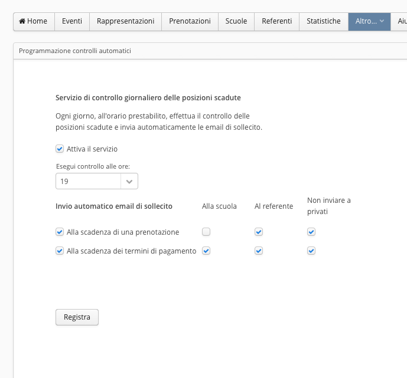La finestra di configurazione del sistema di controllo scadenze
- Attiva il servizio: consente di attivare o disattivare globalmente il servizio di controllo. Se il servizio è disattivato i controlli non vengono eseguiti e le e-mail di sollecito non vengono inviate.
- Esegui il controllo alle ore: specifica l'ora del giorno (o della notte) alla quale effettuare il controllo e inviare le e-mail.
Invio automatico e-mail di sollecito:
- Alla scadenza di una prenotazione: invia le e-mail alla scadenza della data di conferma prenotazione, se la prenotazione non è confermata.
- Alla scadenza dei termini di pagamento: invia le e-mail alla scadenza della data di conferma pagamento, se il pagamento non è confermato.
Per ognuna delle precedenti opzioni è possibile specificare se le e-mail vanno inviate al referente, alla scuola o a entrambi.:
L'ultima opzione consente di non inviare la e-mail se si tratta di prenotazione di un privato.